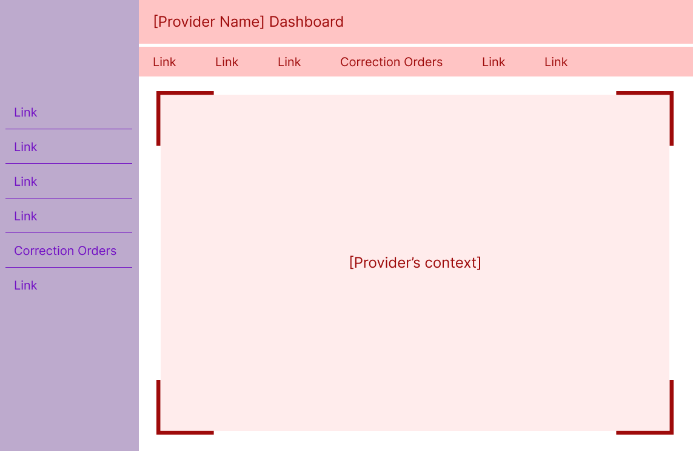

I was approached by a product owner to conduct user research on an early design for a new product — Licensing — used by childcare providers and administrative staff to issue, maintain, and manage the licenses required for a facility to legally operate. A core workflow in this system is creating and managing correction orders, which Licensing Specialists use to document health and safety violations uncovered during onsite inspections, ranging from sanitation issues to staffing concerns.
Correction orders are central to Specialists' work, yet the client's current system makes issuing and managing them frustrating, inconsistent, and error-prone. Because this workflow is both high-stakes and historically painful, the redesigned experience needed to better support Specialists' real needs while reducing the friction they face today.
The team's primary goal was to determine whether the redesigned correction order workflow effectively supported the needs and mental models of Specialists. As I learned more about the limitations of the legacy system, I also became increasingly interested in whether a more intuitive experience could influence how Specialists approached creating and managing correction orders in their day-to-day work.
To determine whether the designs were meeting those goals, I evaluated:
After establishing the study's goals and success criteria, I created a research plan to align the team on scope, methods, and expectations. With that foundation in place, I moved into selecting the appropriate methods for evaluating the redesigned workflow.
To choose the right data collection methods, I considered the goals of the initiative, the stage of the designs, and the access I had to Licensing Specialists. Because the team needed to validate whether the proposed workflow supported real inspection practices, an evaluative approach made the most sense. I opted for moderated, synchronous sessions so I could observe Specialists' reactions in real time and probe when something didn't align with their expectations.
Given the population of 20 Specialists and the scope of the study, a small, focused sample was appropriate. I structured the sessions as a mixed-methods usability study that combined task-based evaluation with qualitative interview questions to capture both behavioral and attitudinal insights.
Before finalizing my recruitment criteria, I initially planned to recruit Specialists who had some early exposure to the new designs. A few unconventional UI patterns in the designs could have been difficult to navigate without context, so this felt like a reasonable starting point. However, once I learned that only three Specialists had seen the designs, it became clear that recruiting solely from that group would have produced an unrepresentative sample.
In response, I shifted to recruiting Specialists with no prior exposure to the redesign. This ensured the findings reflected the broader population and allowed me to observe how first time users interpreted the workflow.
To ensure I captured meaningful data, I adapted my facilitation strategy, providing more explicit task instructions and guiding participants past task failures when needed, prioritizing insight over strict adherence to usability testing convention.
With that adjustment in place, I used a brief pre-screener to confirm that participants met the following criteria:
These criteria guaranteed that the participants represented the real world users of the workflow and could provide grounded, experience based feedback on the redesigned flow.
I conducted five one-hour usability sessions over Microsoft Teams using a Figma prototype. Each session followed a consistent structure designed to build rapport, observe behaviors, and probe into participants' expectations and reactions in real time:
After completing all sessions, I invited participants to complete an optional, anonymous satisfaction survey, which helps me refine my moderation style and improve future participant experiences.
Moving into analysis, my first step was to bring structure to the raw data I had amassed. After transcribing each session recording, I extracted comments, quotes, nonverbal reactions, and observations relevant to my research questions. With this textualized dataset, I selected the following complementary analysis methods to understand both what participants did and how they felt doing it:
Together, these methods revealed which parts of the workflow were intuitive, which consistently caused confusion or frustration, and where participants' expectations of system behavior weren't met.
Before creating design recommendations, I synthesized the study's results into four key findings that highlight where the prototype supported Specialists' needs and where critical gaps remained.
Although evaluating the legacy system wasn't a formal goal of the study, participants referenced it frequently when interacting with the new designs. They described their current correction order workflow as slow, cumbersome, and unreliable, with failures in notifications and status tracking that forced them to maintain parallel spreadsheets and manually verify information. This lack of trust made the process feel daunting and often led to incomplete correction orders or skipping documenting the violation altogether — reinforcing the hypothesis that a more usable, reliable system could meaningfully change their behavior.
Participants responded positively to the automated features in the redesign, noting that the system handled much of the repetitive data entry that previously consumed their time. Even when certain workflows felt unfamiliar at first, they quickly navigated them more confidently in subsequent tasks, suggesting that the system's visual hierarchy and patterns supported learnability. These improvements indicated that a faster, more intuitive experience could encourage Specialists to issue correction orders more regularly.
Despite the improvements above, participants struggled with how some features were organized — particularly when two navigation bars appeared at once for different contexts. This dual-navigation pattern led to repeated missteps and task failures, signaling that the system's structure did not align with Specialists' mental models of how their work should flow.
Across sessions, Specialists expressed a clear expectation that the system should support ongoing interactions with Providers throughout a correction order's lifespan — a capability absent from the prototype. They looked for features that would streamline communication, reduce reliance on external communication channels, and provide visibility into what Providers see in the system. Many noted that the legacy system obscures critical information, making it difficult for Providers to understand what they need to do and when. These gaps underscored the need for the platform to function as a shared, transparent workspace between Specialists and Providers.
These findings clarified where the prototype aligned with Specialists' needs and where structural, workflow, and communication gaps remained. The following design recommendations focus on addressing the most critical barriers to task success and supporting end to end collaboration between Specialists and Providers.
Grounded in the insights from this study, I designed 15 recommendations aimed at reducing friction, strengthening Specialists' mental models, and improving the overall usability of the system. I prioritized these using an Impact/Difficulty matrix, prioritizing changes that would meaningfully improve Specialists' ability to navigate the system, understand context, and complete core tasks. While some recommendations addressed efficiency or “nice-to-have” enhancements, the highest-impact items centered on information architecture issues that were actively undermining task success.
When Specialists navigated into a Provider's dashboard, a second navigation bar appeared at the top of the screen. This top nav contained links relevant only to the current Provider, while the persistent left nav contained administrative tools.

The sudden appearance of a second navigation — each containing overlapping or similarly named items — created confusion and a disproportionate surge in task failures. Specialists weren't always sure which menu controlled which part of the system, and the competing navigation structures made it harder to understand where they were in the workflow.
I recommended collapsing the Specialist navigation whenever a user enters the Provider's context. This approach:
To support recognition when collapsed, I added icons to each Specialist navigation item. Over time, Specialists may build familiarity with these icons, making it easier to navigate even when the menu is minimized. Hovering over the Specialist navigation expands it to include labels as an overlay of the Provider's context, signaling that clicking here removes them from the Provider's context without relying solely on iconography.
This solution reduces cognitive load while reinforcing the contextual cues Specialists rely on to understand where they are in the system — two issues that surfaced repeatedly in the study.
While business constraints prevented further validation with participants, the logic behind this solution resonated strongly with stakeholders who work closely with Specialists.
I'll briefly highlight two additional recommendations that had meaningful impact:
Specialists expected certain communication features that were missing from the prototype. I recommended adding lightweight but meaningful features to streamline interactions with Providers while reducing reliance on external channels. These additions aim to help Specialists manage the full correction order process while maintaining a centralized, system-based record of communication.
Specialists often weren't sure whether the system had completed an action — for example, whether creating a correction order automatically notified the Provider. I recommended adding explicit feedback mechanisms (such as confirmation modals) to reassure Specialists that the system was behaving as expected. This matters because feedback fosters trust, and trust is essential for reducing off-system workarounds they're accustomed to with the legacy system.
Once the recommendations were validated, I worked closely with the product designer through a series of collaborative design sessions in Figma. He brought deep knowledge of system constraints; I brought the research and rationale. Together, we shaped solutions that maximized impact without over-investing in polish — very much in line with my philosophy of prioritizing clarity, usability, and ease of use over aesthetics .
The most immediate impact of this work was the implementation of several high-value recommendations — most notably the improvements to navigation and system feedback — which bolstered the correction order workflow's usability before it ever reached development. But the deeper impact came from how the research reshaped the team's understanding of Specialists themselves. Many stakeholders were surprised by how strongly Specialists avoided working with correction orders due to the limitations of their legacy system, and this new clarity sparked broader conversations about communication, notifications, and the back-and-forth nature of the workflow. The study also led to the creation of a functional user archetype (a role-based alternative to a persona that emphasizes shared responsibilities over demographics), giving the team a grounded reference point for future design decisions and helping reduce reliance on assumptions or stereotypes.
On a personal level, this project strengthened my ability to navigate ambiguity with confidence. I entered unfamiliar territory — new users, new workflows, and a product still taking shape — and emerged with a deep, evidence-based understanding of a complex domain. The experience reinforced my belief that even in challenging environments, a disciplined UX process can cut through uncertainty and create clarity, alignment, and meaningful change.